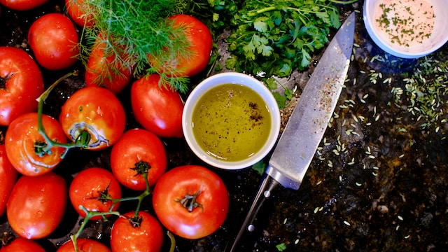
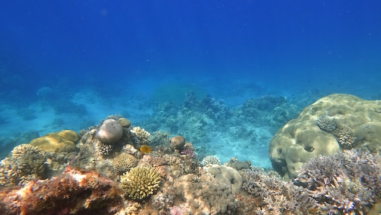

in data 15/01/2023
News Feed
Scoperta di una nuova specie di papera di gomma
Un breve articolo sulla recente scoperta di una specie di papera di gomma mai vista prima.

geo
tech
Viaggio culinario: alla ricerca dei sapori perduti
in data 20/02/2023
Esplorazione di tradizioni culinarie dimenticate e la ricerca di sapori autentici.

cucina
Esplorano la profondità
in data 15/01/2023
Un viaggio nelle profondità dell'oceano alla scoperta di creature misteriose e inesplorate.

viaggi
Arte moderna: oltre i confini convezionali
in data 05/04/2023
Un'analisi delle tendenze e delle sfide nell'arte contemporanea, con interviste e artisti emergenti.

arte
tech